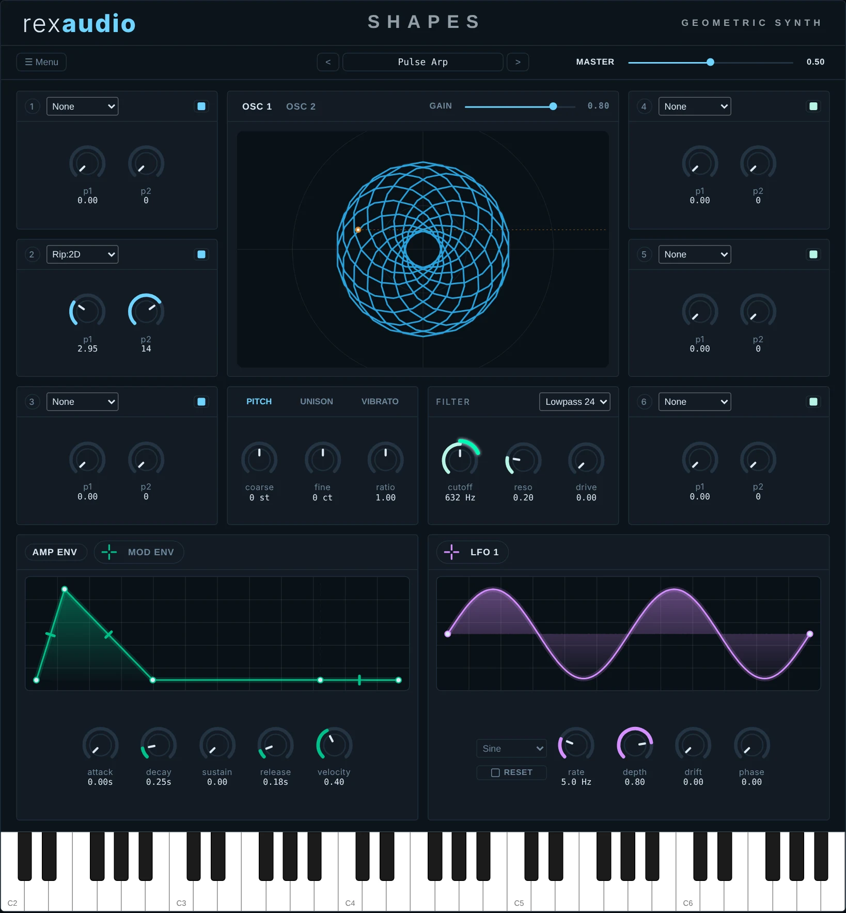
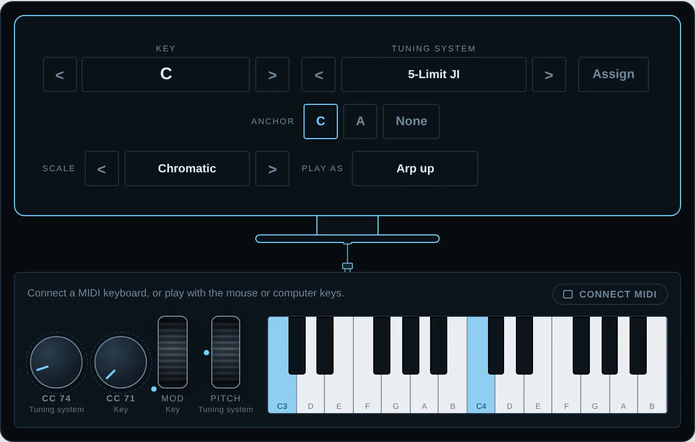
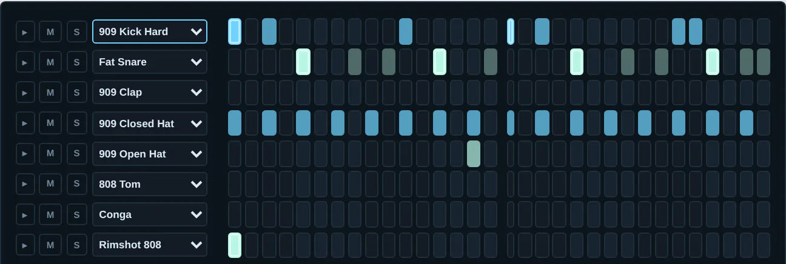
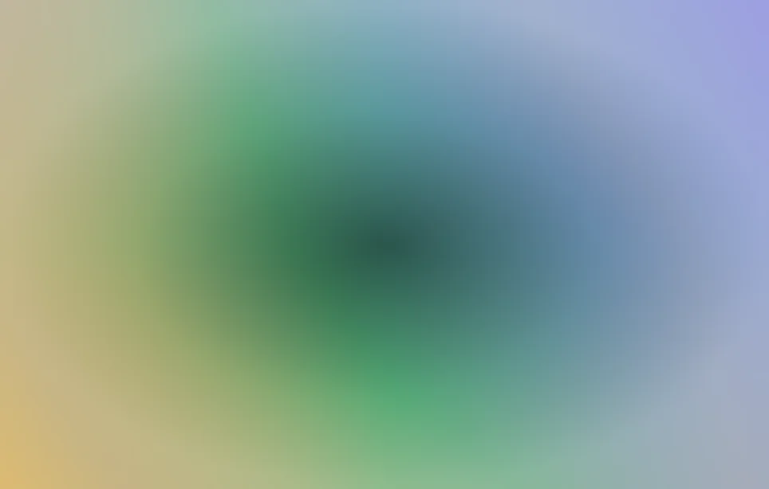
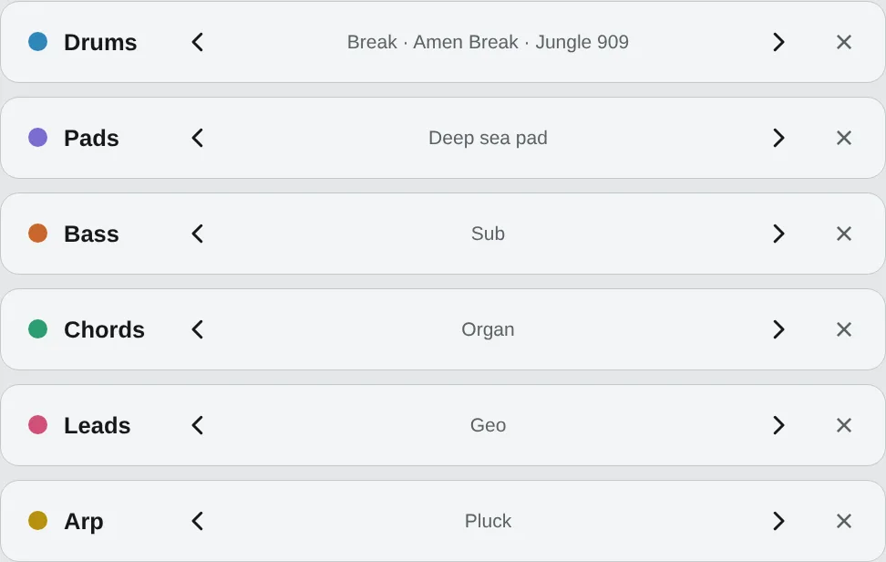

A geometric synthesizer, tuning presets you can play, a drum machine, colourful pads and loops you can layer.

SynthesizerA geometric synthesizer VST3 plugin for Windows. Early access beta.
See Shapes →
TuningBrowse tuning presets and play them with a virtual MIDI keyboard.
Open Tunings →
Drum machineA drum machine and break player, using recordings of the drum synth.
Open Drums →
PadsPad sounds, each with the colour gradient that goes with it.
Open Colours →
LayersLayer drums, pads, chords, leads, arps and bass, and click through the recordings of each.
Open Loops →